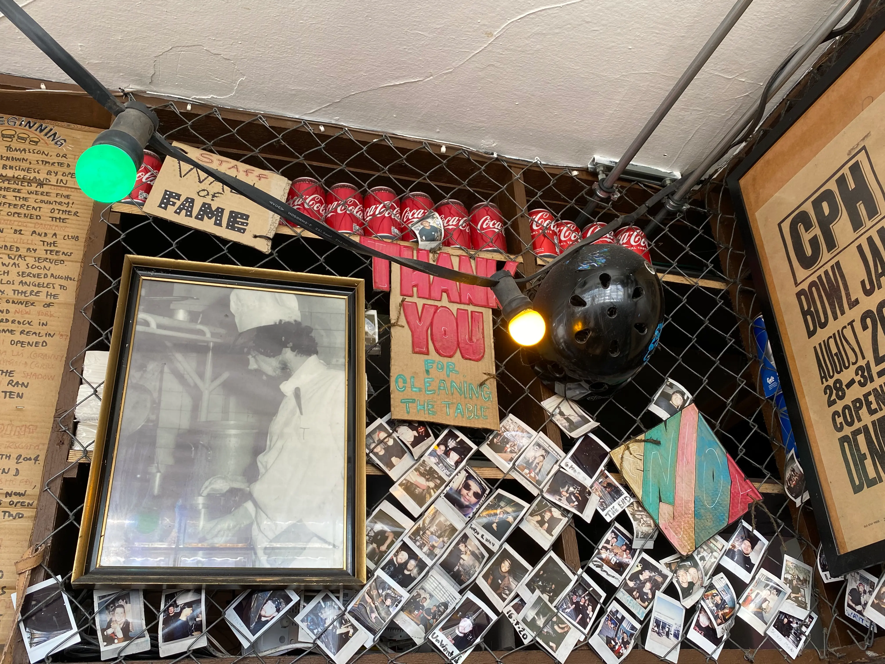
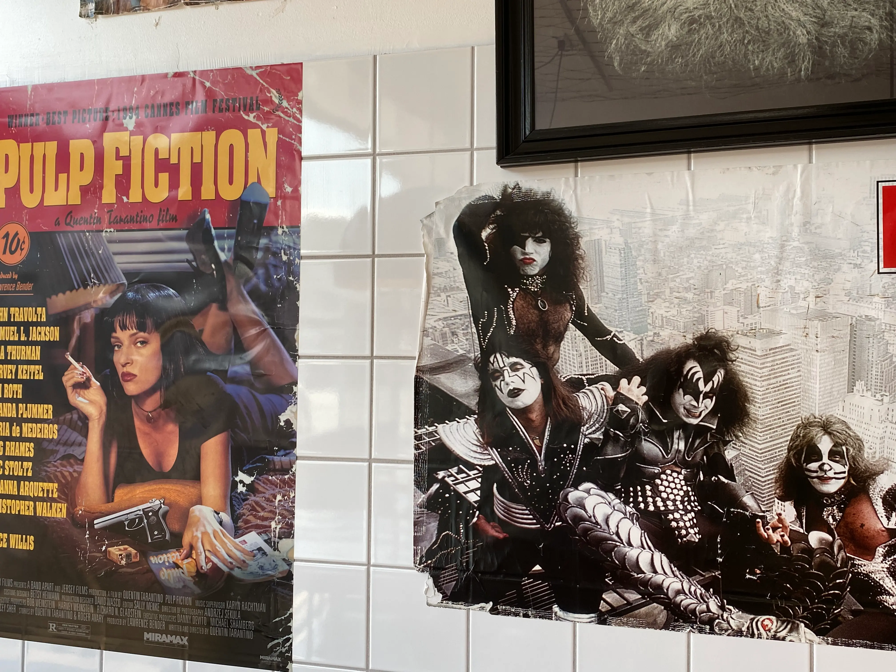
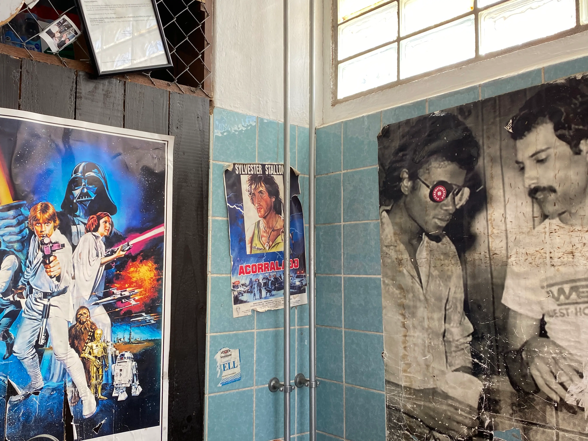
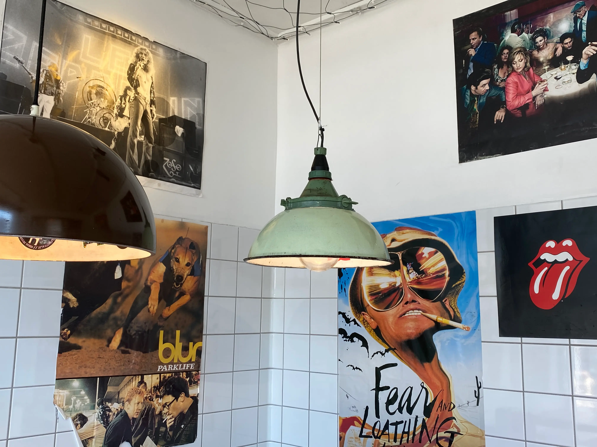
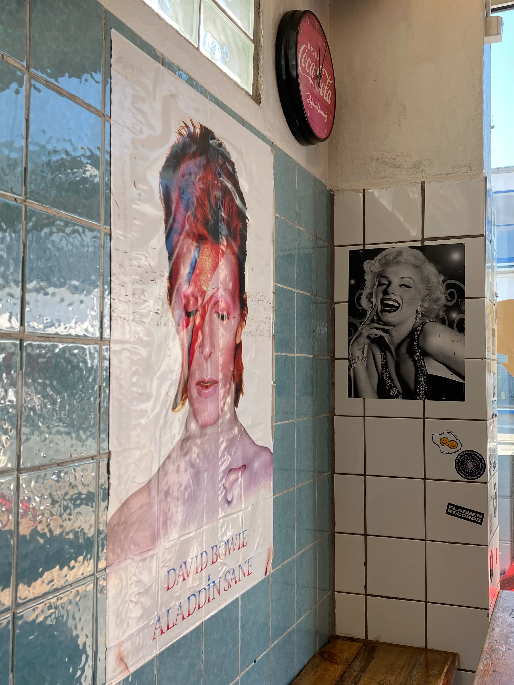
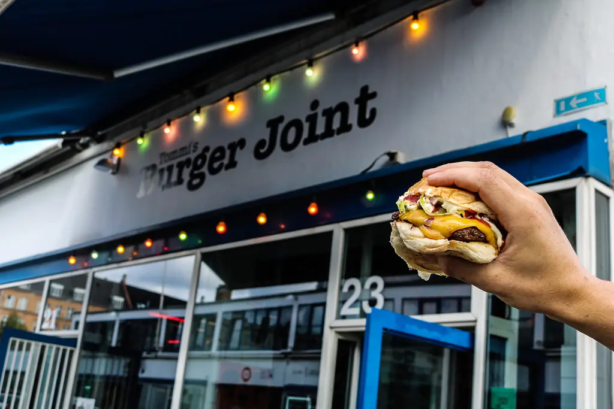
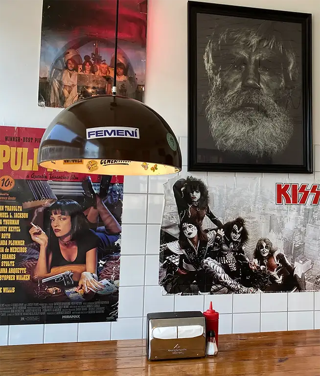

Høkerboderne 21-23
1712 København V





- MONDAY
- TUESDAY
- WEDNESDAY
- THURSDAY
- FRIDAY
- SATURDAY
- SUNDAY
- 11:00-21:00
- 11:00-21:00
- 11:00-21:00
- 11:00-21:00
- 11:00-22:00
- 11:00-22:00
- 11:00-21:00


Kødbyen
Located in the cool and trendy Kødbyen, or the Meatpacking district. The area has been revamped over the last years and is now home to some of the most popular restaurants in Copenhagen. Tommi's been happy to serve everyone since 2014. The area, just on the outskirts of the Vesterbro neighbourhood, is known for everything from family-friendly events to energetic nightlife and Tommi's is part of every scene.
